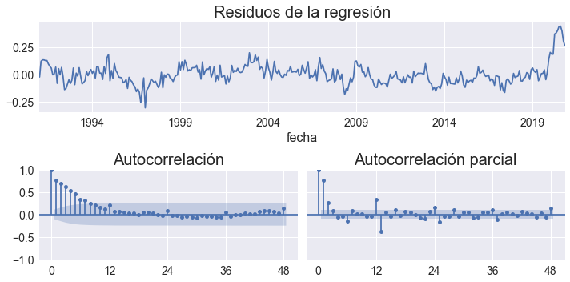

Estimación de la demanda de dinero
3.2. Estimación de la demanda de dinero#
Nota Para ejecutar este cuaderno se requiere el paquete bccr. Si no lo tiene, ejecute la siguiente celda
try:
import bccr
except ImportError:
print('Module bccr missing. Installing it now')
!pip install bccr
from bccr import SW
import numpy as np
from matplotlib import rcParams
import matplotlib.pyplot as plt
plt.style.use('seaborn')
import matplotlib.gridspec as gridspec
import statsmodels.api as sm
from statsmodels.formula.api import ols
plt.style.use('seaborn')
# Cambiar tamaño de las fuentes
rcParams['axes.titlesize'] = 20
rcParams['axes.labelsize'] = 16
rcParams['xtick.labelsize'] = 14
rcParams['ytick.labelsize'] = 14
SW.buscar('medio circulante')
| DESCRIPCION | Unidad | Medida | periodo | |
|---|---|---|---|---|
| codigo | ||||
| 608 | Sector Monetario y Financiero/Medio circulante [608]' | Colón Costarricense | NaN | Mensual |
SW.buscar('tasa básica pasiva', frecuencia='D')
| DESCRIPCION | Unidad | Medida | periodo | |
|---|---|---|---|---|
| codigo | ||||
| 3748 | Tasas de interés/Tasa básica pasiva [3748]' | Porcentaje | NaN | Diaria |
variables = dict(IMAE=35449,IPC=25482,M1=1445,Tbasica=423)
datos = SW(**variables, func='mean', FechaInicio='1991m01', FechaFinal='2020m11').dropna()
datos
| IMAE | IPC | M1 | Tbasica | |
|---|---|---|---|---|
| fecha | ||||
| 1991-01 | 51.108817 | 8.064069 | 6.158123e+04 | 34.000000 |
| 1991-02 | 42.665858 | 8.301969 | 6.024168e+04 | 35.000000 |
| 1991-03 | 40.391637 | 8.407419 | 5.942290e+04 | 33.193548 |
| 1991-04 | 40.185649 | 8.644489 | 6.078601e+04 | 33.000000 |
| 1991-05 | 40.276545 | 8.794029 | 6.185368e+04 | 32.500000 |
| ... | ... | ... | ... | ... |
| 2020-07 | 110.987099 | 106.127077 | 5.166828e+06 | 3.708065 |
| 2020-08 | 110.584336 | 106.122788 | 5.206881e+06 | 3.635484 |
| 2020-09 | 113.705524 | 106.411930 | 5.206211e+06 | 3.498333 |
| 2020-10 | 118.613059 | 106.496597 | 5.061595e+06 | 3.293548 |
| 2020-11 | 120.969090 | 106.498184 | 4.913216e+06 | 3.346667 |
359 rows × 4 columns
res = ols('M1 ~ IMAE + IPC + Tbasica', data=np.log(datos)).fit()
fig = plt.figure(figsize=[10,5], tight_layout=True)
gs = gridspec.GridSpec(2, 2)
ax = fig.add_subplot(gs[0, :])
axs0 = fig.add_subplot(gs[1,0])
axs1 = fig.add_subplot(gs[1,1], sharey=axs0)
res.resid.plot(title='Residuos de la regresión', ax=ax)
OPCIONES = dict(lags=48, alpha=0.05, )
sm.graphics.tsa.plot_acf(res.resid, ax=axs0, title='Autocorrelación',**OPCIONES);
sm.graphics.tsa.plot_pacf(res.resid, ax=axs1, title='Autocorrelación parcial', **OPCIONES);
axs0.set_xticks([0,12,24,36,48])
axs1.set_xticks([0,12,24,36,48])
fig.savefig('residuos-demanda-dinero.pdf', bbox_inches='tight')

sss = res.summary()
sss
| Dep. Variable: | M1 | R-squared: | 0.994 |
|---|---|---|---|
| Model: | OLS | Adj. R-squared: | 0.994 |
| Method: | Least Squares | F-statistic: | 1.944e+04 |
| Date: | Thu, 21 Jul 2022 | Prob (F-statistic): | 0.00 |
| Time: | 00:15:30 | Log-Likelihood: | 335.36 |
| No. Observations: | 359 | AIC: | -662.7 |
| Df Residuals: | 355 | BIC: | -647.2 |
| Df Model: | 3 | ||
| Covariance Type: | nonrobust |
| coef | std err | t | P>|t| | [0.025 | 0.975] | |
|---|---|---|---|---|---|---|
| Intercept | 6.3294 | 0.298 | 21.263 | 0.000 | 5.744 | 6.915 |
| IMAE | 1.0242 | 0.079 | 13.044 | 0.000 | 0.870 | 1.179 |
| IPC | 0.9268 | 0.028 | 33.508 | 0.000 | 0.872 | 0.981 |
| Tbasica | -0.3519 | 0.022 | -15.919 | 0.000 | -0.395 | -0.308 |
| Omnibus: | 115.244 | Durbin-Watson: | 0.450 |
|---|---|---|---|
| Prob(Omnibus): | 0.000 | Jarque-Bera (JB): | 463.868 |
| Skew: | 1.349 | Prob(JB): | 1.87e-101 |
| Kurtosis: | 7.872 | Cond. No. | 390. |
Notes:
[1] Standard Errors assume that the covariance matrix of the errors is correctly specified.
sss.tables[2]
| Omnibus: | 115.244 | Durbin-Watson: | 0.450 |
|---|---|---|---|
| Prob(Omnibus): | 0.000 | Jarque-Bera (JB): | 463.868 |
| Skew: | 1.349 | Prob(JB): | 1.87e-101 |
| Kurtosis: | 7.872 | Cond. No. | 390. |
sss = res.summary()
with open('regresion-M1.tex','w') as file:
file.write(sss.tables[1].as_latex_tabular())
file.write(sss.tables[2].as_latex_tabular())